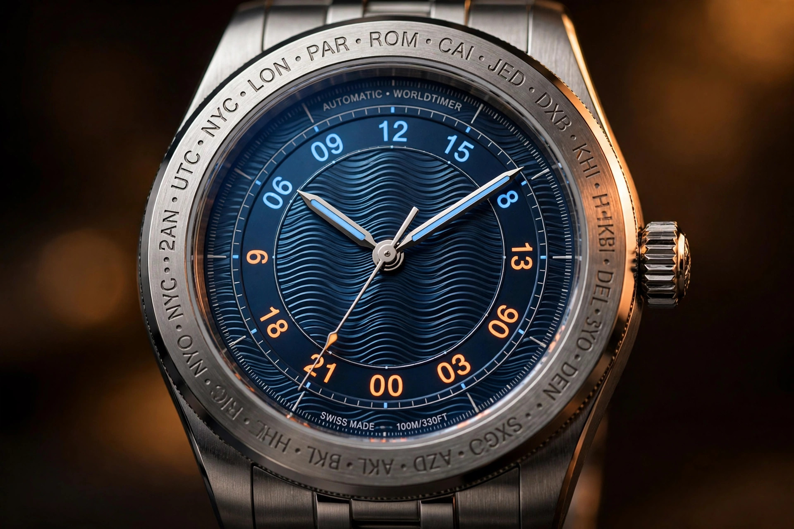

Fifteen Degrees of Correction: Ming's Split Bezel Fixes the Worldtimer's Century-Old DST Blind Spot

Every worldtimer on the market is wrong twice a year. This is not a controversial statement among people who actually travel with one. Louis Cottier invented the worldtime display in the 1930s, with the city ring and rotating 24-hour disc that every descendant of his system still uses, and in the roughly ninety years since, the mechanism has never learned that time zones move. Daylight saving time shifts a subset of the world's cities by an hour each spring and autumn, and the worldtimer, the complication built specifically to tell you what time it is everywhere, simply lets you do the arithmetic yourself.
Ming's 57.05 Comet, launched August 27, 2026 and shown at Geneva Watch Days the following week, is the first worldtimer I have seen that treats this as an engineering problem rather than a user problem. Patent-pending, mechanical, and almost offensively simple, the fix splits the city ring in two. Cities that observe daylight saving sit on a rotating outer bezel. Cities that do not observe it sit on a fixed inner bezel. When the clocks change, you rotate the outer ring one click, exactly 15 degrees, and every DST city advances one hour against the 24-hour scale while every non-DST city stays exactly where it was. A small aperture between 8 and 9 o'clock confirms the state, silver for standard time, red for DST, and the red dot glows in the dark when activated. That is the entire system. No additional crown, no buried pusher sequence, no fifty-page manual appendix, and that is the entire system.
What Cottier Built, and What He Left Out
Cottier's worldtime system, first commercialized by Patek Philippe in the reference 1415 of 1937, is one of the great information displays in all of instrument design. A 24-hour disc rotates once per day, carrying a day-night color scheme. Around it sits a ring of 24 cities, one per time zone, chosen so that each represents its zone's offset from a reference. Read the hour at your city against the 24-hour scale, and you can read every other city's time at a glance. Its elegance is that the whole planet's offsets are encoded as positions; its flaw is that the encoding is static.
Daylight saving is not static. It changes offsets for a minority of zones, twice a year, on dates that are not even globally synchronized. American and European clocks move on different Sundays, which means for several weeks each year the relative offsets between their cities are not the standard ones. A fixed city ring cannot represent this. What every conventional worldtimer does is force the wearer to hold a mental correction table: London is +1 in summer, New York is -4 instead of -5, Sydney is the other way around because the southern hemisphere observes DST during northern winter. A complication built to eliminate arithmetic ends up handing you arithmetic.
For decades the industry treated this as acceptable, or as a problem only money could solve. A few high-end, mechanically complex watches have attempted DST-aware displays with in-movement mechanisms, but they live in the price bracket where the word "accessible" never appears. What nobody did was ask whether the movement needed to know about DST at all.
One Click, Fifteen Degrees
The geometry of Ming's solution is worth pausing on. Fifteen degrees is exactly one twenty-fourth of a circle, which is exactly one hour on a 24-hour scale. Rotating the DST city ring by 15 degrees advances each of those cities by precisely one hour relative to the stationary 24-hour disc. There is no approximation and no calibration. That angle is the answer, the way the 15-degree spacing of longitude lines answers the same problem on a globe.
Execution details matter in a mechanism this exposed. Locking is positive in either position thanks to a spring-loaded ball and corresponding recesses machined beneath the bezel, the same detent architecture that gives dive bezels their clicks, repurposed from a continuous 60-click scale to a binary two-state switch. Ming machines distinct grip points into the outer bezel's edge so the rotation can be performed deliberately, and the bezel's construction is part of the brand's fifth-generation design language, the triple-stepped lug architecture that requires nine individual components for the lugs alone. Case specs are straightforward: 316L stainless steel, 40mm across, 10.33mm thick, 47.8mm lug to lug, with 100 meters of water resistance and double-sided anti-reflective coating on the box sapphire crystals front and rear.
One detail I particularly respect: the confirmation aperture. A watch that asks you to remember whether DST is currently engaged has only replaced one mental task with another. That closes the loop: a silver-or-red indicator between 8 and 9, lumed so it shows red in darkness when DST is active. State is displayed, not remembered.
Why the Fix Belongs in the Bezel
This is the part worth generalizing. Traditional watchmaking's instinct, when a complication has a flaw, is to add parts to the movement. A mechanical DST-aware worldtimer built inside the caliber would need date-aware cams or additional setting positions, each one a service liability and a thickness penalty, to replicate what a rotating ring does in a single machined part. Ming's move was to recognize that DST is not a timekeeping problem but a display problem: the time is already correct and only the labels are wrong. And labels live on the dial and bezel, not in the gear train.
Moving complexity outward, from the protected interior to the user-facing interface, is the opposite of how haute horlogerie usually works, which is why I find it interesting. Haute horlogerie's usual direction is inward: more parts, deeper in the movement, visible only through a caseback. Going the other way produces a correction mechanism a child could operate, with fewer moving parts than the crown it sits next to. There is an argument, and I think it is the right one, that the best place for a two-state seasonal correction is exactly where Ming put it: in the component the user already touches.
None of this would matter if the underlying worldtimer were compromised to make room for the trick, and it is not. Meanwhile the 24-hour worldtime ring rotates normally, the cities stay legible, and the Sellita-based 330.M2 underneath is a known quantity: a 4 Hz automatic with 25 jewels, roughly 50 hours of power reserve, and a movement diameter of 26.2mm in a 4.1mm thickness, finished with skeletonized, brushed, anthracite-coated bridges over a matching anthracite baseplate. Ming replaces the caliber's GMT hand with a rotating 24-hour disc in daytime and nighttime shades of blue, which does double duty as the worldtime reference and, as we will see, the animation engine for the dial.
Comet Tail: A Dial That Does Math
At the center of the dial sits the feature that gives the watch its name: the Comet Tail, a multilayered blue dial built from overlapping raster grids. A raster is a repeating grid of lines or openings. When two such grids overlap, small changes in their relative alignment produce much larger visible patterns, the interference fringes known as moiré. Ming ties one of the raster layers to the rotating 24-hour disc, so as the disc turns through its 15 degrees per hour, the alignment between the layers drifts and the dial's texture visibly evolves through the day. Glance at it in the morning and again in the afternoon and you are looking at different patterns.
Physically, this is a kind of mechanical amplification. Moire fringe spacing grows as the inverse of the difference between the two grid periods, which means a tiny relative rotation can produce a large, clearly visible shift in the interference pattern. A watch that can only move its parts slowly, the 24-hour disc manages one full revolution per day, gets a display that changes at a human-perceptible rate for free. Time of day is encoded twice on this dial: numerically, on the 24-hour ring, and texturally, in the pattern. I know of no other production dial that does this, and I include the elaborate guilloche work of the big houses in that statement. Guilloche is static. This moves.
There is a legitimate question about legibility, and I want to be honest that I have not handled this watch, so I am judging from press images and specifications. A dial that refuses to sit still could, in principle, fight the hands for attention. Ming's answer is to keep the center blue and dark, let the hands and the luminous 24-hour ring carry the reading task, and relegate the animation to the field between them. Whether that separation holds up on the wrist is something I cannot verify from photographs. It is the first thing I would check in person.
Lume as Information Design
Most brands use luminous material the way a teenager uses a highlighter: everywhere, indiscriminately, in one color. Ming's Comet uses it as a data channel. On the 24-hour ring, Super-LumiNova X1 carries blue emission for the daytime hours and orange emission for the nighttime hours, so the day-night division is readable in total darkness by color, not just by position. Hands get blue-emission X1 while the DST indicator gets the red-emission variant. And the floating 12-hour indices are laser-engraved into the underside of the box sapphire crystal and filled with Ming's proprietary Polar White luminous material, which puts the primary time markers on a different visual plane from everything else.
Color-coded photoluminescence is harder than it looks. Different phosphor formulations have different afterglow curves, which means the blue, orange, red, and white emissions will decay at different rates through the night. Getting them to read as a coherent system at 3 a.m., when all four are at a fraction of their initial brightness, is a materials problem, not a styling one. I do not have decay curves for Ming's specific formulations, and the brand has not published them, so I cannot tell you whether the system holds together at hour six. I can tell you that attempting it at all is more ambitious than 95 percent of lume applications in the industry, which treat the stuff as paint.
What I Have Not Touched
Limitations, stated plainly. I have not handled the 57.05 Comet. Every observation about legibility, bezel feel, and lume performance above is inferred from specifications, press photography, and the published mechanism description. Treat the tactile judgments accordingly.
More importantly, the DST system has real boundaries that no bezel can fix. Its indicator is binary, standard or DST, but the real world is not. America and Europe begin and end daylight saving on different dates, so for roughly three weeks each spring and each autumn the watch's single DST state is wrong for one of those regions no matter which position you choose. South of the equator, DST runs during the northern winter, which means a binary DST ON cannot be simultaneously correct for London and Sydney. And the system does nothing for the half-hour and forty-five-minute zones, Kathmandu, Adelaide, Newfoundland, which sit off the 15-degree grid entirely. None of these are Ming's fault. They are the actual shape of global timekeeping, which is messier than any single mechanism can encode. What the Comet does is solve the common case, the one that covers most travelers most of the year, with one click instead of a spreadsheet. I consider that a fair trade, but it is worth knowing where the map ends.
Commercially: two hundred pieces, CHF 6,950 on the cobalt blue Jean Rousseau goat leather strap with quick-release spring bars and a flying-blade tuck buckle with micro-adjustment, CHF 7,950 on Ming's titanium Polymesh bracelet, excluding taxes. Ordering opened August 27, 2026 at 1:00 PM GMT through Ming and its retail network. By the time you read this, the allocation is very likely gone. This is a review of an idea you probably cannot buy, which is the usual condition of interesting independent watchmaking.
Why It Matters
Ming has described itself, through its actions if not its marketing, as an R&D lab that happens to sell watches. As an expression of that identity, the 57.05 Comet is the clearest yet, and comparing it with the brand's previous worldtimers is instructive. Its predecessors attacked the complication from the top down: the 19.02 and 29.01 brought exotic construction, micro-rotor movements, titanium cases. Attacking from the bottom up, the Comet pairs a stainless steel case and a Sellita base with a single patent-pending mechanism that costs almost nothing to manufacture and solves a problem every worldtimer owner has experienced.
There is a lesson in that allocation, because enormous industry energy goes into making simple things complicated: tourbillons in sports watches, minute repeaters you cannot hear in a restaurant, perpetual calendars that will outlive their owners' grandchildren, while the Comet does the reverse. It takes a complicated daily annoyance and makes it simple, with a spring, a ball bearing, and 15 degrees of rotation. Cottier's blind spot survived ninety years of watchmaking's best efforts because everyone was looking inside the movement, while Ming looked at the bezel. Sometimes the right engineering move is not to add a part. It is to move the problem somewhere a part already exists.
Specifications
| Specification | Ming 57.05 Comet |
|---|---|
| Case diameter | 40 mm |
| Case thickness | 10.33 mm |
| Lug to lug | 47.8 mm |
| Case material | 316L stainless steel, brushed and polished; triple-stepped lugs, nine components |
| Bezel | Patent-pending split DST bezel: fixed inner ring (non-DST cities), rotating outer ring (DST cities), one 15-degree click, spring-ball detent, silver/red DST aperture with red lume |
| Crystal | Box sapphire front and rear, double-sided anti-reflective coating; front crystal laser-engraved and filled with Polar White lume |
| Water resistance | 100 m |
| Dial | Multilayered blue Comet Tail moiré interference dial; rotating 24-hour worldtime ring with Super-LumiNova X1 (blue day, orange night) |
| Movement | Sellita for Ming 330.M2, automatic GMT, 25 jewels, 28,800 vph, approx. 50 h power reserve, 24-hour disc, skeletonized anthracite bridges |
| Strap | Cobalt blue goat leather by Jean Rousseau Paris, quick-release spring bars, flying-blade tuck buckle with micro-adjustment; optional titanium Polymesh bracelet; 20 mm lug width |
| Edition | 200 pieces |
| Price | CHF 6,950 (leather) / CHF 7,950 (Polymesh), excluding taxes |
| Availability | Orders opened August 27, 2026, 1:00 PM GMT |
Sources
- Hodinkee, "Introducing: Ming's New 57.05 'Comet' Worldtime Is Out Of This World Innovation," 2026. https://www.hodinkee.com/articles/intro-ming-5705-comet
- Monochrome Watches, "First Look: The Ming 57.05 Comet, A Worldtimer with a Clever Answer to Daylight Saving Time," 2026. https://monochrome-watches.com/ming-57-05-comet-worldtimer-daylight-saving-time-review-price/
- Europa Star, "MING 57.05 Comet - a new approach to worldtime," 2026. https://www.europastar.com/time-keeper/1004116365-ming-57-05-comet-a-new-approach-to-worldtime.html
- Ming, official 57.05 Comet product page. https://www.ming.watch/featured-product/ming-57-05-comet-polymesh
- HiConsumption, "Ming's 57.05 Comet Cracks the Worldtimer's Century-Old Blind Spot with a Single Bezel Click," Ryan Calder, August 27, 2026. https://hiconsumption.com/watches/ming-57-05-comet/
- Prestige Online, "10 best new watches from Geneva Watch Days 2026," September 2026. https://www.prestigeonline.com/my/watches/best-new-watches-geneva-watch-days-2026/
- Hypebeast, "MING 57.05 Comet Limited Edition Release Info," August 2026. https://hypebeast.com/2026/8/ming-57-05-comet-limited-edition-release-info